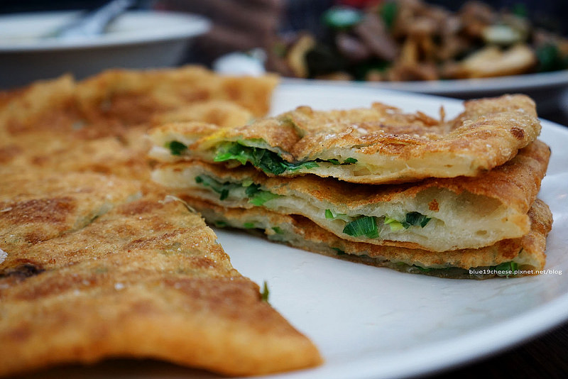
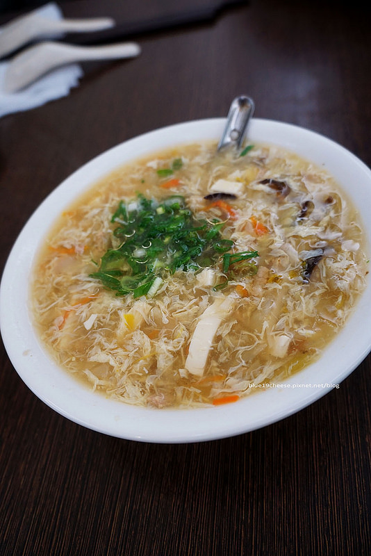
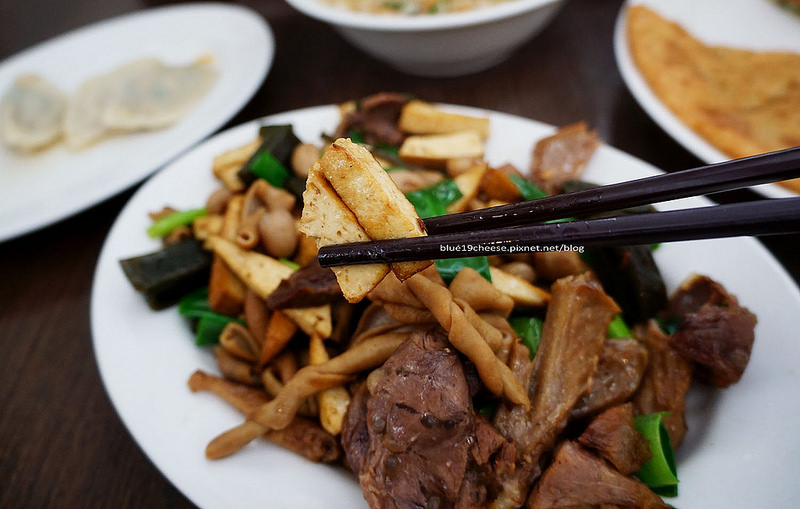

斗煥坪水餃館
地址: 苗栗縣頭份市中正二路210號
電話: 03-766 0166
營業時間: 10:00~20:00(下午均正常營業)
公休日: 農曆三節
店家fb: 請按我
快樂斗煥坪.烤肉看電影~
當過兵的人有沒有聽過?可惜我沒有抽到斗煥坪 (喂~)
124縣道上.苗栗頭份超人氣排隊水餃館
雖然店名是水餃館.但店家和網路上的食記.都沒有特別推薦水餃
上去菓風麥芽工房時.經過斗煥坪水餃館.真的沒辦法不去注意到
扛棒超大.店面拓展好幾間.晚上下來扛棒燈一亮.超級明顯的啦
所以我們吃完下午茶.巧克力DIY結束之後
就決定晚餐是這裡了.因為時間不太夠.回台中吃我會餓扁.哈~

對面斗煥國小就可以停車喔
我們是路邊剛好有位置
你看馬路兩邊的車子.我想大部分都是斗煥坪水餃館的客人吧
還好一到就有位置
我實在很怕一路餓回家.其實翁先生坐旁邊還在打飽嗝XD
我還是第一次看到滷味快炒是採用套餐的形式耶
本來想單點個幾樣小菜
結果.店家的滷味快炒太火紅了
店家直接幫你搭配了啦
你就選擇吃不吃牛.吃不吃辣
菜單背後有套餐內容~
結帳也排很久~
醬料碗筷自己拿~
酸辣湯
這是小碗的
料非常的多.而且偏酸喔
我是覺得還不錯.但是翁先生心裡有喜歡的酸辣湯了

隨便一撈.你看看.都是料..
豬肉水餃
這裡只有單一口味
就是高麗菜+韭菜
不用沾醬.內餡期時就滿有味道了
皮比較厚一點.內餡沒有其他家多
表現我覺得算可以.如果有帶小朋友的家庭
這道至少是小孩都愛吃的.也可以讓他們都吃飽的快速一道

還是個人喜好問題
我覺得這樣搭也可以
翁先生就覺得高麗菜就是高麗菜.韭菜就韭菜.他們兩個不可以在一起XD
蔥油餅
這很特別耶.我一直以為是非常酥脆的
吃起來反而像是沙鹿豬肉餡餅他們家的山東大餅一樣
裡面多了咀嚼感.外皮酥香金黃.帶點厚度

疊疊樂拍一張
裡面的新鮮蔥花~
口味上好吃.來頭份這邊點來吃看看吧~

雜不囉嗦
也就是滷味快炒
第一次看到這麼特別的料理手法
聽說以前是由客人自己挑選滷味櫃裡面的小菜
店家再加入蔥段和花生快炒
結果太熱門.讓我想說.都來了.怎麼鎮店三寶可以不來一下
我覺得很香滿好吃的
滷味香氣中.還多了快炒的鍋氣.獨樹一格
幾乎每一桌上都有雜不囉嗦和蔥油餅
但也是看人吃的一道
像我就滿喜歡的.翁先生覺得就是滷味下去炒成客家小炒.哈~
他愛傳統滷味多一點.我接受度廣一點
所以還好我們不會搶東西吃XD

鴨腸
牛腱
海帶
豆干

鴨翅
大口夾一份.過癮
來到苗栗頭份.可以來吃看看鎮店三寶
然後上去冷泉或是菓風麥芽工房
都是一個滿不錯用餐的選擇
引用文章:藍色起士的美食主義